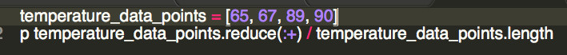
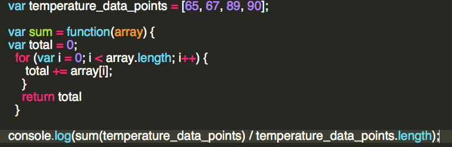
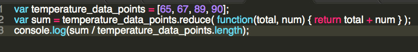

JavaScript Loup
Using JavaScript in Reduce in Looping Constructs
January 16, 2015

I'll have to admit, working in JavaScript after working in Ruby feels vulnerable. It's not just the syntax differs enough to give one pause before attempting to solve a problem. It's that the tools that come with Ruby, namely in the Enumerable class, are not available. The methods I've come to rely on or even think in, such as select, map, cycle or inject are not in the toolbox anymore. Let's step back and talk about looping in as a general technique in both JavaScript and Ruby. From there, we'll compare looping over collections. Even though we cannot get to all the methods in Ruby, we'll show that the JavaScript method of reduce can become a middle step to each of those particular methods.
Looping
Let's say we wanted to determine the average temperature for 2014. We'd have a large set of datapoints of the high temperature for each day across the globe. Now hopefully these would be compared to a set of datapoint taken from the same geographical locations. In Ruby and JavaScript, we'd keep those datapoints in a collection such as an Array. To take the average of the temperature in Ruby, we'd do something like this:
Notice that we don't have a 'for each' with an obvious iterator here. Instead we have an Enumerator method of reduce with the + symbol passed to it. We understand that there's an accumulator behind all of this. When we get to the last member of the collection we end up with the summed value. How does the typical approach look in JavaScript?
Let's talk about our gut reaction here to this section of JavaScript code. It's doing the same thing as the reduce statement above. However, notice a few extra rules of the road. First, we have to declare the variables and the function with the keyword var in JavaScript. Not so in Ruby. Next, we end the line with a semi-colon. Ruby instead recognizes the end of the line. Lastly, JavaScript requires the console.log() object and method in order to see something. We are used to using 'p' or 'print' or 'puts' in Ruby to hear back from our code. JavaScript requires console.log(show-me-something).
JavaScript Reduce
Let's consider the use of the reduce funcion as a gateway to re-writing all of these loops without the for i++ technique. Here's an alternative to the sum method above.
We still visit every member of our collection. We rely on our total variable set to an initial value of 0 and then end up with our final value. In other words, we've reduced our entire collection to a single value. In fact, many of our other useful missing Enumerable functions in Ruby can be thought of (and even re-written) using the reduce method in JavaScript. Max, Min are obvious examples. Map, collect and select can be thougt of as returning something new as a result of visting the collection. Check out Aldo's blog at AirPair on the JavaScript reduce function and map.